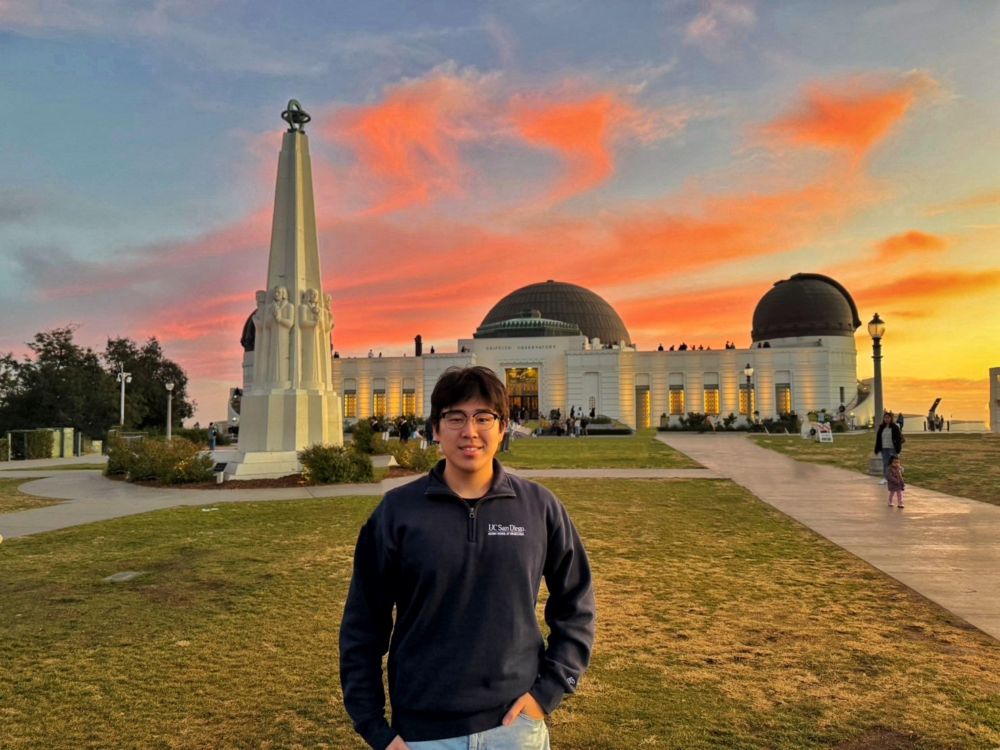

CHIH-CHIEH (MORRIS) FAN, 范智傑

UC San Diego |

UC Berkeley |
National Tsing Hua University |

National Taiwan University of Science and Technology |
|---|
m5fan (at) ucsd.edu
Resume
Hi there! Welcome to my personal website. I'm Morris, an M.S. ECE student at UCSD specializing in Electronic Circuits & Systems. I studied my Senior year as an exchange student at UC Berkeley EECS.
My research interest lies in Biomedical IC/RFIC/Analog IC design and SerDes. I am also passionate about entrepreneurship and enjoy exploring marketing strategy. I received the Honorable Mention Award in HUM120 2024 Shark Tank at UC Berkeley Haas. If you share similar interests or just want to learn more about my journey, please feel free to explore my website and connect with me on LinkedIn!
BTW, I wrote some articles about the seminars and conferences I've attended, as well as sharing insights into my life in the U.S.A. You can find them on Mo-Blog, my personal Blog^^. I hope you find them useful and interesting! Enjoy!
More About Me

I like to travel with my wife Anna, who studies MN/RN @UW-Milwaukee ε٩(๑> ₃ <)۶з